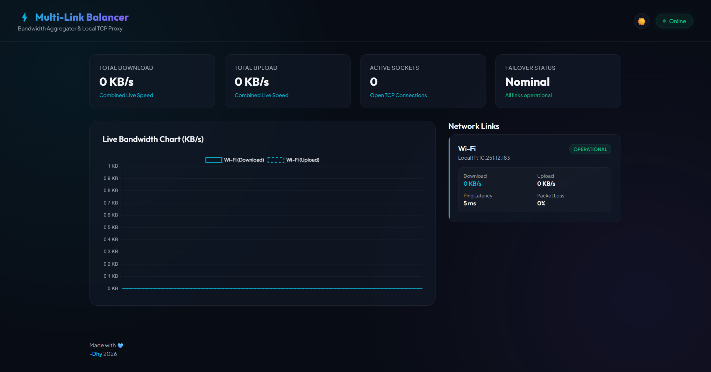

Projects
Beberapa proyek pilihan yang telah saya kerjakan selama masa perkuliahan dan waktu luang.
Java
OOP
Aplikasi Kasir Apotek Samara
Aplikasi Kasir perusahaan fiktif yang dibuat sebagai tugas akhir mata kuliah OOP dengan Java Netbeans.
Lihat Detail
Go
JavaScript
Loadbalancer Network
Aplikasi Desktop Sederhana dengan bahasa Go yang Dapat Menggabungkan 2 Buah Koneksi di Windows dan Ubuntu.
Lihat Detail
Microsoft
Office
Dokumen & Data
Pengolahan dokumen, spreadsheet, dan presentasi untuk kebutuhan akademik, pribadi, maupun bisnis.
Lihat Detail